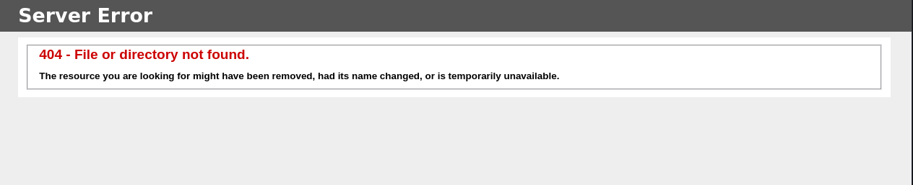

ABOUT THE AUTHOR
Whoami
Username: amx2
Role: Junior Penetration Tester
I'm amx2, a Junior Penetration Tester passionate about cybersecurity, ethical hacking, and identifying security vulnerabilities.
I focus on Web Application Penetration Testing, Network Security, and Active Directory environments.
Through hands-on labs and practical challenges, I continuously develop my penetration testing skills and share my technical findings, methodologies, and learning experiences through detailed writeups.
My Goal: To understand how systems can be compromised, identify security weaknesses, and help make digital environments more secure.
This is the visual cover for the write-up. It is illustrative artwork and is not evidence collected from the Blueprint machine.
01 — Reconnaissance
Discovering exposed services and identifying the attack surface.
first discover all open port on target
└─$ nmap <target_ip>
Starting Nmap 7.991 ( https://nmap.org ) at 2026-10-29 08:51 -0400
Nmap scan report for 10.112.148.63
Host is up (0.097s latency).
Not shown: 989 closed tcp ports (reset)
PORT STATE SERVICE
80/tcp open http
135/tcp open msrpc
139/tcp open netbios-ssn
443/tcp open https
445/tcp open microsoft-ds
3306/tcp open mysql
8080/tcp open http-proxy
49152/tcp open unknown
49153/tcp open unknown
49154/tcp open unknown
49160/tcp open unknown
Nmap done: 1 IP address (1 host up) scanned in 86.25 secondsThe command nmap <target_ip> checks the target for reachable TCP services. I used it first to get a broad map of the machine before choosing what to inspect. The result shows the host is online and lists HTTP (80), Windows RPC/NetBIOS (135 and 139), HTTPS (443), SMB (445), MySQL (3306), and HTTP on 8080, plus high RPC ports. That is why I followed up with service and version detection.
now i know what open ports lets check each one
02 — Enumeration
Investigating discovered services and potential weaknesses.
lets know version of each one
nmap -sC -sV -T4 <target_ip>
Starting Nmap 7.991 ( https://nmap.org ) at 2026-10-29 08:57 -0400
Nmap scan report for 10.112.148.63
Host is up (0.093s latency).
Not shown: 989 closed tcp ports (reset)
PORT STATE SERVICE VERSION
80/tcp open http Microsoft IIS httpd 7.5
|_http-server-header: Microsoft-IIS/7.5
|_http-title: 404 - File or directory not found.
| http-methods:
|_ Potentially risky methods: TRACE
135/tcp open msrpc Microsoft Windows RPC
139/tcp open netbios-ssn Microsoft Windows netbios-ssn
443/tcp open ssl/http Apache httpd 2.4.23 (OpenSSL/1.0.2h PHP/5.6.28)
|_http-server-header: Apache/2.4.23 (Win32) OpenSSL/1.0.2h PHP/5.6.28
| tls-alpn:
|_ http/1.1
|_ssl-date: TLS randomness does not represent time
| ssl-cert: Subject: commonName=localhost
| Not valid before: 2009-11-10T23:48:47
|_Not valid after: 2019-11-08T23:48:47
| http-ls: Volume /
| SIZE TIME FILENAME
| - 2019-04-11 22:52 oscommerce-2.3.4/
| - 2019-04-11 22:52 oscommerce-2.3.4/catalog/
| - 2019-04-11 22:52 oscommerce-2.3.4/docs/
|_
|_http-title: Index of /
| http-methods:
|_ Potentially risky methods: TRACE
445/tcp open microsoft-ds Windows 7 Home Basic 7601 Service Pack 1 microsoft-ds (workgroup: WORKGROUP)
3306/tcp open mysql MariaDB 10.3.23 or earlier (unauthorized)
8080/tcp open http Apache httpd 2.4.23 (OpenSSL/1.0.2h PHP/5.6.28)
| http-methods:
|_ Potentially risky methods: TRACE
| http-ls: Volume /
| SIZE TIME FILENAME
| - 2019-04-11 22:52 oscommerce-2.3.4/
| - 2019-04-11 22:52 oscommerce-2.3.4/catalog/
| - 2019-04-11 22:52 oscommerce-2.3.4/docs/
|_
|_http-server-header: Apache/2.4.23 (Win32) OpenSSL/1.0.2h PHP/5.6.28
|_http-title: Index of /
49152/tcp open msrpc Microsoft Windows RPC
49153/tcp open msrpc Microsoft Windows RPC
49154/tcp open msrpc Microsoft Windows RPC
49160/tcp open msrpc Microsoft Windows RPC
Service Info: Hosts: www.example.com, BLUEPRINT, localhost; OS: Windows; CPE: cpe:/o:microsoft:windows
Host script results:
| smb2-time:
| date: 2026-10-29T12:58:13
|_ start_date: 2026-10-29T12:42:43
| smb-os-discovery:
| OS: Windows 7 Home Basic 7601 Service Pack 1 (Windows 7 Home Basic 6.1)
| OS CPE: cpe:/o:microsoft:windows_7::sp1
| Computer name: BLUEPRINT
| NetBIOS computer name: BLUEPRINT\x00
| Workgroup: WORKGROUP\x00
|_ System time: 2026-10-29T12:58:13+00:00
| smb-security-mode:
| account_used: guest
| authentication_level: user
| challenge_response: supported
|_ message_signing: disabled (dangerous, but default)
| smb2-security-mode:
| 2.1:
|_ Message signing enabled but not required
|_nbstat: NetBIOS name: BLUEPRINT, NetBIOS user: <unknown>, NetBIOS MAC: 02:ff:e0:3f:ff:f3 (unknown)
Service detection performed. Please report any incorrect results at https://nmap.org/submit/ .
Nmap done: 1 IP address (1 host up) scanned in 70.99 seconds-sC runs Nmap?s standard discovery scripts, -sV probes open ports to identify service versions, and -T4 increases scan speed. I used this after the first scan to identify what was behind the ports. The output reports IIS 7.5 on port 80, Apache 2.4.23 with PHP 5.6.28 on ports 443 and 8080, Windows 7 and SMB details on 445, and MariaDB on 3306. It also shows an osCommerce 2.3.4 directory and an expired TLS certificate. These version and configuration details guided the later checks.
1 http

The browser requested the target over HTTP on port 80 and received an IIS 404 response. This means the server answered, but the root path shown here did not contain a page. I recorded that result and moved on to check the other web entry point instead of treating the 404 as proof that the host was unavailable.
2- https

I opened the HTTPS service and checked what it exposed. The screenshot shows an auto-generated directory index containing an osCommerce 2.3.4 folder. That gave me the application name and version to investigate. The page being browsable also means directory listing was enabled, which can reveal files and application structure.
now have oscommerce-2.3.4
lets got to smb and nmap give me some information
Sharename Type Comment
--------- ---- -------
ADMIN$ Disk Remote Admin
C$ Disk Default share
IPC$ IPC Remote IPC
Users Disk
Windows Disknice lets use smbmap
┌──(kali㉿kali)-[~/Desktop]
└─$ smbmap -H 10.112.148.63 -u BLUEPRINT
________ ___ ___ _______ ___ ___ __ _______
/" )|" \ /" || _ "\ |" \ /" | /""\ | __ "\
(: \___/ \ \ // |(. |_) :) \ \ // | / \ (. |__) :)
\___ \ /\ \/. ||: \/ /\ \/. | /' /\ \ |: ____/
__/ \ |: \. |(| _ \ |: \. | // __' \ (| /
/" \ :) |. \ /: ||: |_) :)|. \ /: | / / \ \ /|__/ \
(_______/ |___|\__/|___|(_______/ |___|\__/|___|(___/ \___)(_______)
-----------------------------------------------------------------------------
SMBMap - Samba Share Enumerator v1.10.7 | Shawn Evans - ShawnDEvans@gmail.com
https://github.com/ShawnDEvans/smbmap
[*] Detected 1 hosts serving SMB
[*] Established 1 SMB connections(s) and 1 authenticated session(s)
[+] IP: 10.112.148.63:445 Name: 10.112.148.63 Status: Authenticated
Disk Permissions Comment
---- ----------- -------
ADMIN$ NO ACCESS Remote Admin
C$ NO ACCESS Default share
IPC$ NO ACCESS Remote IPC
Users READ ONLY
Windows NO ACCESS
[*] Closed 1 connections now i need to read Useres lets try to log in
──(kali㉿kali)-[~/Desktop]
└─$ smbclient //10.112.148.63/Users -U BLUEPRINT
Password for [WORKGROUP\BLUEPRINT]:
Try "help" to get a list of possible commands.
smb: \>nothing interested
ok lets back to oscommerce-2.3.4 and search if their any exploit
┌──(kali㉿kali)-[~/Desktop]
└─$ searchsploit oscommerce 2.3.4
------------------------------------------------------------------------------------------------------------------------------------------------------------------------------------------------------- ---------------------------------
Exploit Title | Path
------------------------------------------------------------------------------------------------------------------------------------------------------------------------------------------------------- ---------------------------------
osCommerce 2.3.4 - Multiple Vulnerabilities | php/webapps/34582.txt
osCommerce 2.3.4.1 - 'currency' SQL Injection | php/webapps/46328.txt
osCommerce 2.3.4.1 - 'products_id' SQL Injection | php/webapps/46329.txt
osCommerce 2.3.4.1 - 'reviews_id' SQL Injection | php/webapps/46330.txt
osCommerce 2.3.4.1 - 'title' Persistent Cross-Site Scripting | php/webapps/49103.txt
osCommerce 2.3.4.1 - Arbitrary File Upload | php/webapps/43191.py
osCommerce 2.3.4.1 - Remote Code Execution | php/webapps/44374.py
osCommerce 2.3.4.1 - Remote Code Execution (2) | php/webapps/50128.py
------------------------------------------------------------------------------------------------------------------------------------------------------------------------------------------------------- ---------------------------------
Shellcodes: No Results03 — Exploitation
Gaining initial access through identified vulnerabilities.
lets start with Remote Code Execution of it’s under /usr/share/exploitdb/exploits/php/webapps/50128.py or use searchsploit -m 50128.py

This is the public exploit reference I found for the identified osCommerce version. I reviewed its description and prerequisites to decide whether it applied to the instance in the lab. Search results are leads; the version and configuration still need to be checked before drawing a conclusion.
ok now modify it with the target

I configured the proof of concept with the lab storefront address and its installation endpoint. Those settings tell the script which application to contact. The screenshot is the target configuration step; the target address is specific to the private lab and is omitted from the page text.
and now make shell.php
I created a temporary test file for the authorized lab check. The screenshot documents its purpose; I have not copied the reusable command code into the page text.

This screenshot shows the temporary PHP command-execution test file prepared for the lab. It was used to check whether the application could cause server-side PHP to run. Such a file is highly dangerous if left on a live site, so it should only exist during an authorized test and must be removed immediately afterward.
1-
┌──(kali㉿kali)-[~/Desktop]
└─$ python3 -m http.server 8000
Serving HTTP on 0.0.0.0 port 8000 (http://0.0.0.0:8000/) ...2-
I started a listener for the lab validation; the supplied screenshots document the result.
4- run it python3 44374_php.py

The browser listing shows files that appeared in the application?s documentation directory during the exercise, including the temporary test file. This is evidence that the validation reached the server and changed its file system. It also highlights why cleanup matters: leaving a command-capable file accessible would give others a direct path to misuse the site.

The page returned the Windows security-context label ?NT AUTHORITY\SYSTEM?. In this lab, that output was used as proof that the application could execute a command with SYSTEM-level privileges. This is a critical impact because SYSTEM is a highly privileged local context. The result should be recorded as a finding and the test stopped after this proof point.
The following screenshot records the encoded validation request from the original lab notes; I have not copied the reusable callback string into the page text.

This screenshot documents the follow-up callback setup and the encoded request used in the original lab notes. It shows how the test moved from confirming command execution in the browser to receiving command output in the assessment terminal. The exact callback string and address are deliberately not repeated here because they are reusable remote-access instructions.
04 ? POST-EXPLOITATION
Reviewing the lab impact and sensitive-data exposure.
go to C:\Users\Administrator\Desktop

The directory listing shows that the test context could browse the Administrator Desktop and see a file named root.txt. This demonstrates access to sensitive user-profile content from the compromised context. The screenshot documents the impact; the file contents themselves are not reproduced here.
now i need to get ntlm

I started a temporary HTTP file server from the assessment machine?s Mimikatz tools folder. The request log shows the Blueprint host connecting back and requesting the executable. This records the transfer path used in the lab; it does not mean the tool itself is a vulnerability, but it shows that the command-execution access could reach an external assessment host.
lets download ti

The screenshot shows the Windows host downloading the assessment utility into the lab profile and reporting that the transfer completed. This was part of the credential-exposure check. In a real engagement, use only owner-approved tools and evidence handling, and remove transferred utilities after the test.

The final screenshot shows a local password-database audit result, with sensitive values obscured in the source image. It demonstrates that credential material was accessible from the obtained context. Hashes can enable offline password guessing, so they should be treated as secrets: do not publish them or send them to third-party cracking sites. Report the exposure, preserve evidence securely, and rotate affected credentials.
and decrypt it with https://crackstation.net/